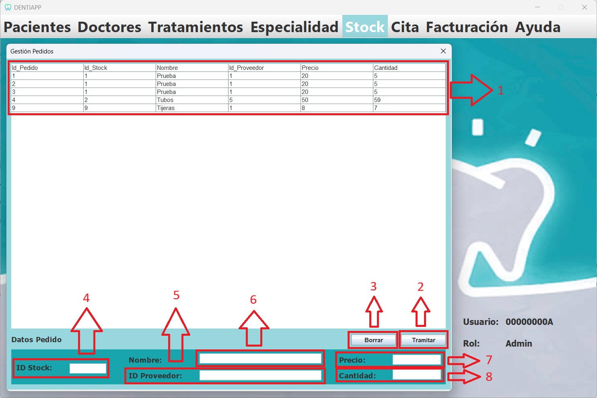

Esta es la página de Gestión de Pedidos. A ella tiene acceso el Administrador, quien podrá visualizarla e interactuar con ella.
En esta página, el Admnistrador podrá ver una tabla con los pedidos de materiales que han realizado los Doctores, y tendrá la
posibilidad de decidir si aceptar la solicitud y tramitar el pedido, o denegarla y eliminarla.
A continuación, se mostrará el diseño de nuestra interfaz, señalizando y explicando la funcionalidad de los distintos
elementos destacables:

Listado de elementos:
-
Tabla:Está conectada a la base de datos "Solicitud_materiales", y nos permite visualizar el
contenido de esta. Presenta una funcionalidad especial al hacer doble click sobre una de sus filas, rellenando los cuadros
de texto de la parte inferior con el contenido del pedido seleccionado.
-
Botón "Tramitar":Su función es la de aceptar el pedido seleccionado y añadir la cantidad de
materiales indicada al total de materiales en la base de datos "Stock".
En el caso de aceptar la solicitud, nos mostrará un mensaje indicando que el pedido ha sido aceptado. Ahora ya se podrá ver
en la base de datos "Stock" que la cantidad del material del pedido ha aumentado.
-
Botón "Borrar":Se utiliza en caso de que el Administrador considere que un pedido no deba
realizarse. En estos caso, en vez de que el pedido quede en el olvido en la base de datos, el Administrador lo eliminará
para mantener registro solo de los pedidos válidos.
-
Cuadro de texto "ID Stock":En él se mostrará el ID del material del pedido seleccionado.
-
Cuadro de texto "Nombre":En él se mostrará el nombre del material del pedido seleccionado.
-
Cuadro de texto "ID Proveedor":En él se mostrará el ID del proveedor que proporciona
el material del pedido seleccionado.
-
Cuadro de texto "Precio":En él se mostrará el precio del material del pedido seleccionado.
-
Cuadro de texto "Cantidad":En él se mostrará la cantidad del material del pedido seleccionado.